Indeksoitu sulatusjono, aluekohtaiset savuworker-erät, vanhentuneiden kyselyiden peruutus sekä V5/V6:n muuttumattomien pintakertoimien taustalaskenta. Jalanjäljet eivät odota workeria.
Vakaa 60 FPS ei vielä täyty 1000 osan suurpalossa. Pelkkä worker-erän nopeutuminen ei tarkoita vastaavaa FPS-parannusta. 120 FPS:ää ei ole validoitu.
Neljä sulatuspyyntöerää; viiden lämpimän toiston pahin aika. Sama energia ja samat lähteet. Ei FPS-mittaus.
| Lähteitä | Vanha | Indeksoitu |
|---|---|---|
| 100 | 0.3 ms | 0.2 ms |
| 250 | 1.1 ms | 0.3 ms |
| 500 | 3.7 ms | 0.7 ms |
| 1000 | 4.0 ms | 0.9 ms |
12 V6-pintakenttää / worker-erä. Kylmä sisältää käynnistyksen. Jokainen tulos tarkistettu. Pelin pääsäie ei odota erän valmistumista.
| Kapasiteetti / todellinen huippu | Kylmä | Lämpimät erät |
|---|---|---|
| 1 / 1 | 52.6 ms | 27.6 / 26.4 / 27.2 / 27.2 ms |
| 8 / 8 | 47.4 ms | 9.6 / 10.3 / 9.7 / 9.7 ms |
Sama valmis kolmikerroksinen talo, ensin kolme sytytyskohtaa, sitten lähes kaikkien osien yhtäaikainen sytytys. Ei uusi taiteellinen socket-rakennelma. Molemmat ensiajot onnistuivat toiminnallisesti; ne paljastivat savujonon vanhentuneiden kyselyiden ongelman. Viimeinen native-ajo sisältää sen lisäkorjauksen.
M1 Pro / Chrome headless / 1440×900 / noin 60 Hz / kehityspalvelin. Sää elää; tämä ei ole jäädytetty kausaalinen A/B. Tallenteen lataus, käynnistys, sytytyskäsky ja screenshotit eivät sisälly ruutuaikaikkunoihin. Eläimet, rakennuspintalumi ja lämpökenttä pois. Muut järjestelmät päällä. Kuormassa simulaatio voi edetä seinäkelloa hitaammin.
| Ajo / vaihe | Pahin ruutu | 1 % low | 60 FPS alitusaika | Pisin alitusjakso | Savujonon huippu |
|---|---|---|---|---|---|
| fire · native · baseline | 50.0 ms | 28.0 | 51.2 % | 100.1 ms | 0 |
| fire · native · three-seed-spread | 83.4 ms | 16.5 | 81.4 % | 833.3 ms | 278 |
| fire · native · mass-ignition-stress | 133.4 ms | 8.2 | 100.0 % | 19965.9 ms | 4096 |
| fire · native · damage | 150.0 ms | 6.7 | 100.0 % | 24949.0 ms | 4096 |
| fire · native · collapse | 116.7 ms | 9.7 | 88.2 % | 27565.6 ms | 4096 |
| fire · native · rubble | 83.3 ms | 21.2 | 75.2 % | 166.7 ms | 21 |
| fire · primitive · baseline | 16.8 ms | 59.5 | 0.0 % | 0.0 ms | 0 |
| fire · primitive · three-seed-spread | 50.0 ms | 28.4 | 8.0 % | 83.4 ms | 205 |
| fire · primitive · mass-ignition-stress | 150.0 ms | 8.0 | 100.0 % | 19915.9 ms | 4096 |
| fire · primitive · damage | 133.3 ms | 8.0 | 100.0 % | 24965.7 ms | 4096 |
| fire · primitive · collapse | 116.7 ms | 12.1 | 61.1 % | 15882.6 ms | 4096 |
| fire · primitive · rubble | 83.3 ms | 25.2 | 34.3 % | 116.6 ms | 23 |
| fire-final · native · baseline | 50.0 ms | 26.2 | 50.5 % | 83.3 ms | 0 |
| fire-final · native · three-seed-spread | 83.4 ms | 16.9 | 81.4 % | 883.4 ms | 274 |
| fire-final · native · mass-ignition-stress | 166.8 ms | 6.2 | 100.0 % | 19982.6 ms | 2917 |
| fire-final · native · damage | 166.7 ms | 6.5 | 100.0 % | 24982.3 ms | 2378 |
| fire-final · native · collapse | 150.0 ms | 8.5 | 86.8 % | 26582.3 ms | 2065 |
| fire-final · native · rubble | 83.3 ms | 24.0 | 71.7 % | 216.7 ms | 24 |
Taulukon alitusraja 60 FPS / 3 % toleranssi (17,182 ms). Tiukat 60/120 rajat, 0,1 % low ja kaikki ruutuajat raakadatassa. Ei keski-FPS-hyväksyntää.
Yhteenveto · Laskentakokeet · fire native: ruutuajat · fire primitive: ruutuajat · fire-final native: ruutuajat · Peli
1000 osaa pystyssä, 0 palaa, 0 rauniota. Lähdekoodi 1a8aae7. Savuworkerin virheitä 0; odottavia kyselyitä vaiheen lopussa 0. Peruutettuja kyselyitä yhteensä ei mittaria ensiajossa.
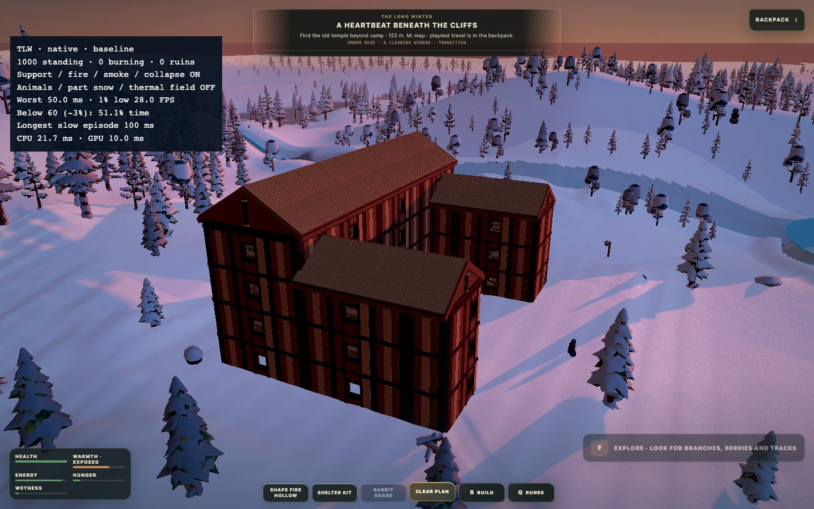
1000 osaa pystyssä, 3 palaa, 0 rauniota. Lähdekoodi 1a8aae7. Savuworkerin virheitä 0; odottavia kyselyitä vaiheen lopussa 38. Peruutettuja kyselyitä yhteensä ei mittaria ensiajossa.
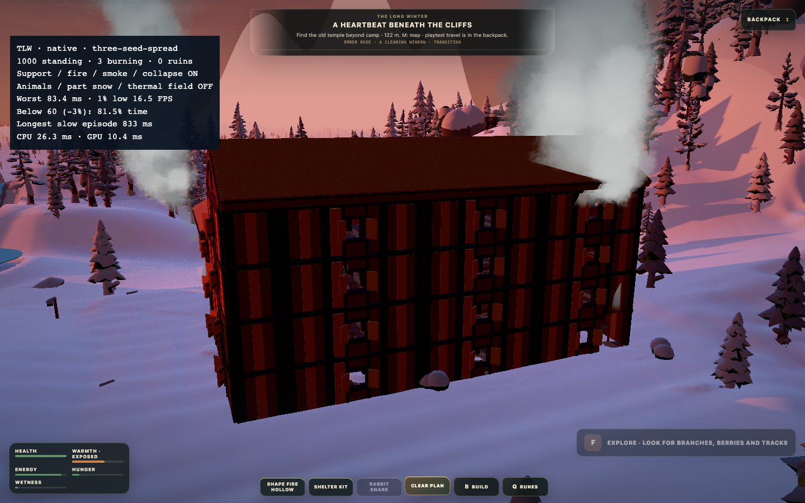
997 osaa pystyssä, 997 palaa, 0 rauniota. Lähdekoodi 1a8aae7. Savuworkerin virheitä 0; odottavia kyselyitä vaiheen lopussa 4080. Peruutettuja kyselyitä yhteensä ei mittaria ensiajossa.
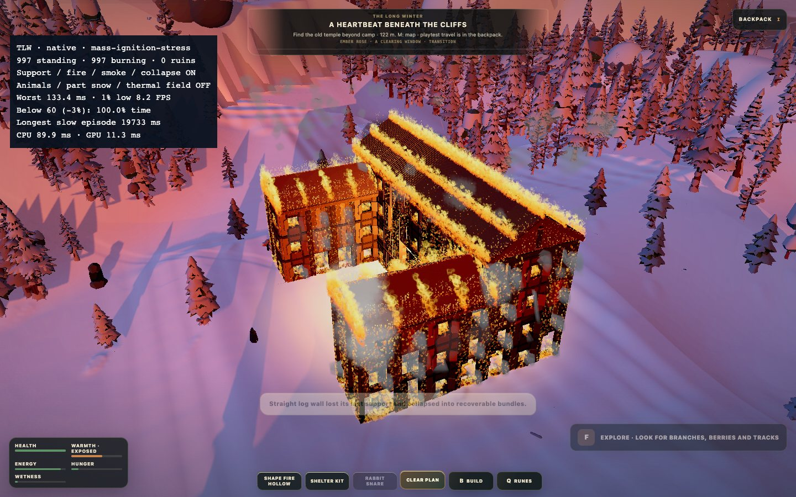
879 osaa pystyssä, 879 palaa, 68 rauniota. Lähdekoodi 1a8aae7. Savuworkerin virheitä 0; odottavia kyselyitä vaiheen lopussa 4080. Peruutettuja kyselyitä yhteensä ei mittaria ensiajossa.
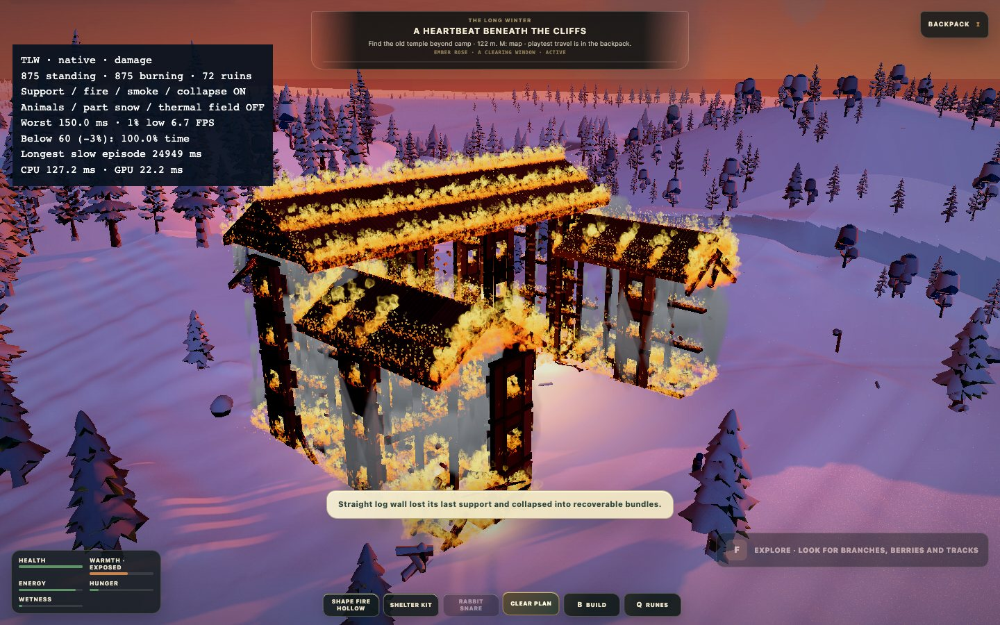
0 osaa pystyssä, 0 palaa, 771 rauniota. Lähdekoodi 1a8aae7. Savuworkerin virheitä 0; odottavia kyselyitä vaiheen lopussa 1. Peruutettuja kyselyitä yhteensä ei mittaria ensiajossa.
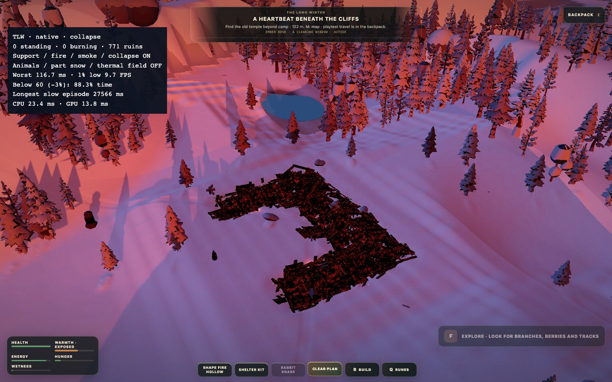
0 osaa pystyssä, 0 palaa, 771 rauniota. Lähdekoodi 1a8aae7. Savuworkerin virheitä 0; odottavia kyselyitä vaiheen lopussa 8. Peruutettuja kyselyitä yhteensä ei mittaria ensiajossa.
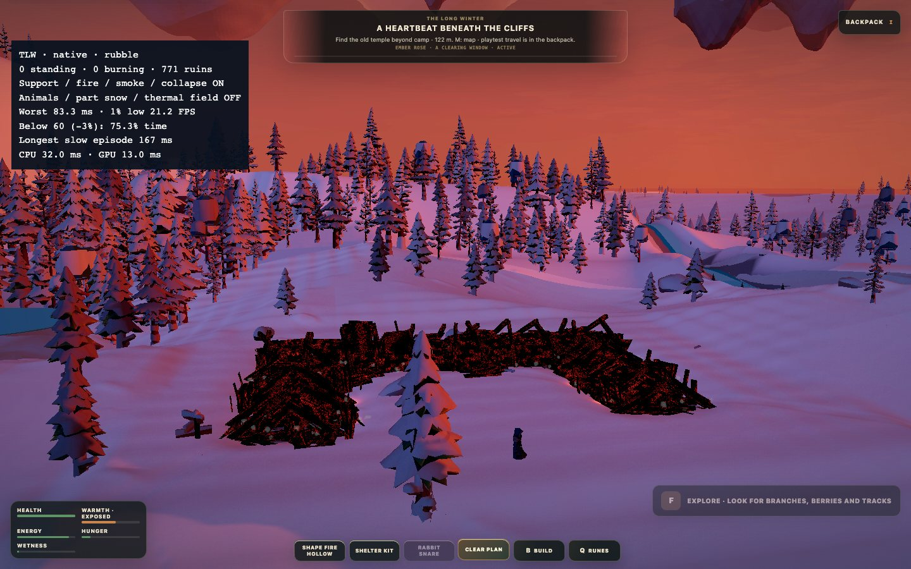
1000 osaa pystyssä, 0 palaa, 0 rauniota. Lähdekoodi 1a8aae7. Savuworkerin virheitä 0; odottavia kyselyitä vaiheen lopussa 0. Peruutettuja kyselyitä yhteensä ei mittaria ensiajossa.
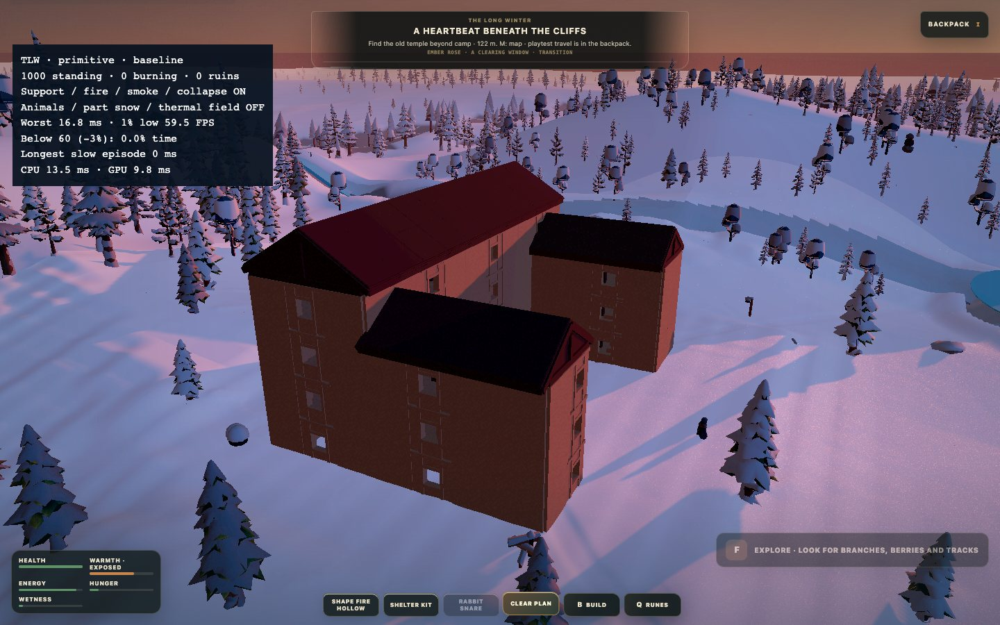
1000 osaa pystyssä, 3 palaa, 0 rauniota. Lähdekoodi 1a8aae7. Savuworkerin virheitä 0; odottavia kyselyitä vaiheen lopussa 22. Peruutettuja kyselyitä yhteensä ei mittaria ensiajossa.
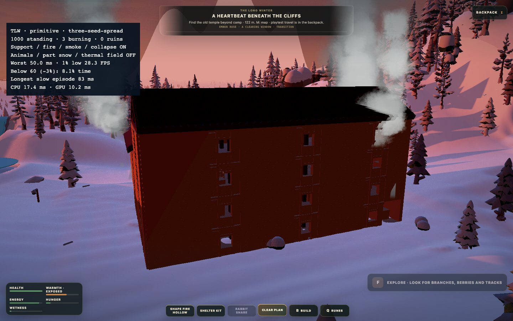
997 osaa pystyssä, 997 palaa, 0 rauniota. Lähdekoodi 1a8aae7. Savuworkerin virheitä 0; odottavia kyselyitä vaiheen lopussa 4080. Peruutettuja kyselyitä yhteensä ei mittaria ensiajossa.
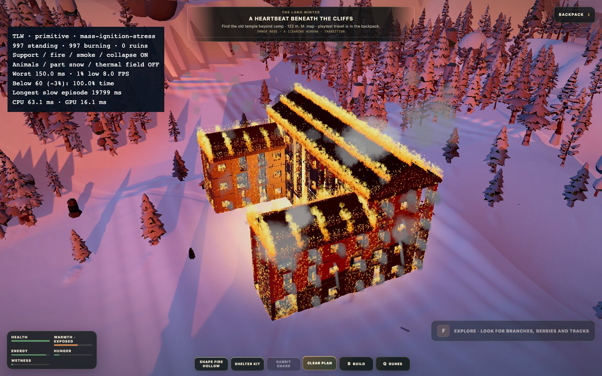
818 osaa pystyssä, 818 palaa, 90 rauniota. Lähdekoodi 1a8aae7. Savuworkerin virheitä 0; odottavia kyselyitä vaiheen lopussa 4064. Peruutettuja kyselyitä yhteensä ei mittaria ensiajossa.
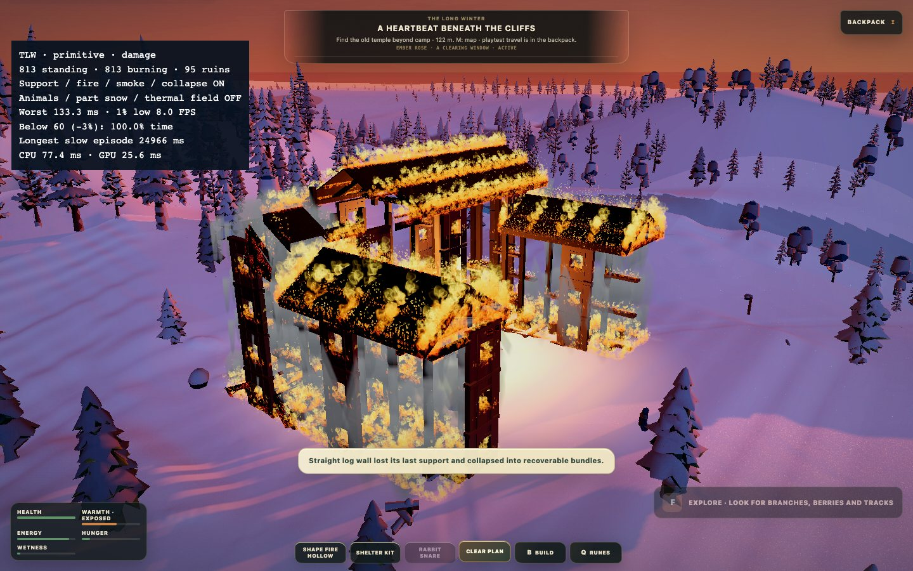
0 osaa pystyssä, 0 palaa, 765 rauniota. Lähdekoodi 1a8aae7. Savuworkerin virheitä 0; odottavia kyselyitä vaiheen lopussa 3. Peruutettuja kyselyitä yhteensä ei mittaria ensiajossa.
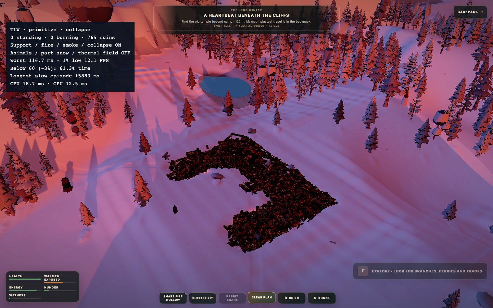
0 osaa pystyssä, 0 palaa, 765 rauniota. Lähdekoodi 1a8aae7. Savuworkerin virheitä 0; odottavia kyselyitä vaiheen lopussa 6. Peruutettuja kyselyitä yhteensä ei mittaria ensiajossa.
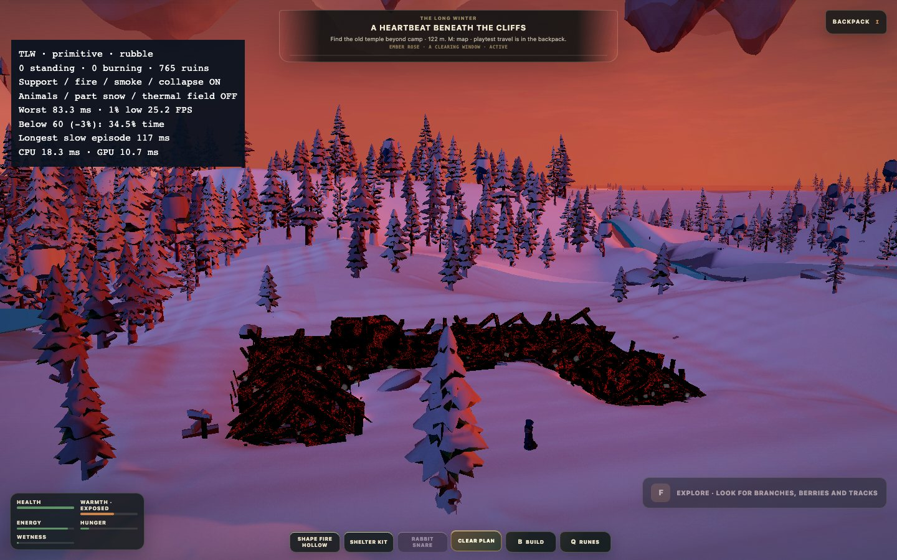
1000 osaa pystyssä, 0 palaa, 0 rauniota. Lähdekoodi e0ef16a. Savuworkerin virheitä 0; odottavia kyselyitä vaiheen lopussa 0. Peruutettuja kyselyitä yhteensä 0.
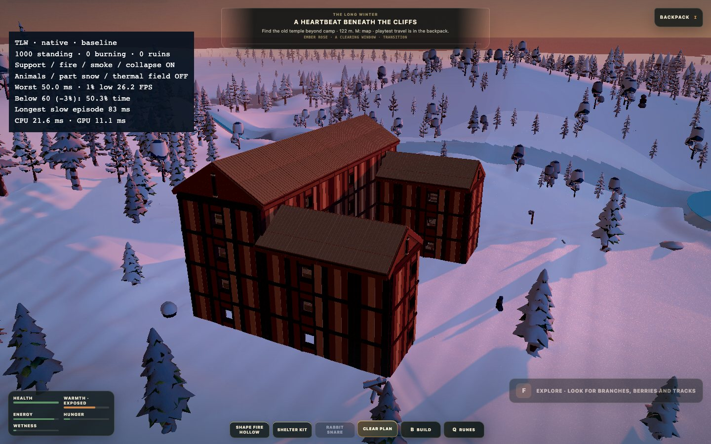
1000 osaa pystyssä, 3 palaa, 0 rauniota. Lähdekoodi e0ef16a. Savuworkerin virheitä 0; odottavia kyselyitä vaiheen lopussa 1. Peruutettuja kyselyitä yhteensä 32.
997 osaa pystyssä, 997 palaa, 0 rauniota. Lähdekoodi e0ef16a. Savuworkerin virheitä 0; odottavia kyselyitä vaiheen lopussa 2074. Peruutettuja kyselyitä yhteensä 126507.
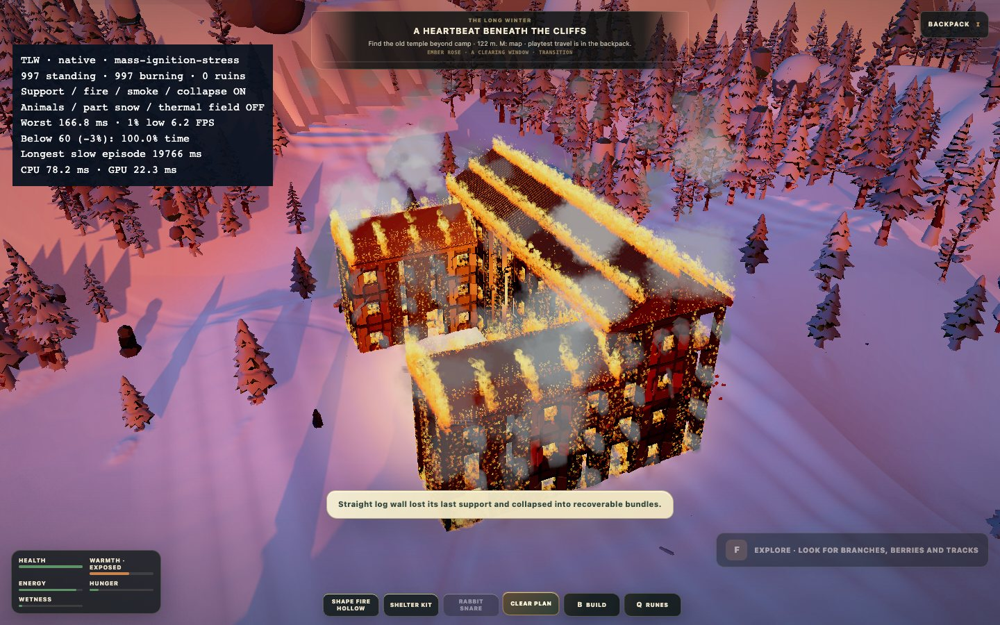
891 osaa pystyssä, 891 palaa, 81 rauniota. Lähdekoodi e0ef16a. Savuworkerin virheitä 0; odottavia kyselyitä vaiheen lopussa 1767. Peruutettuja kyselyitä yhteensä 503703.
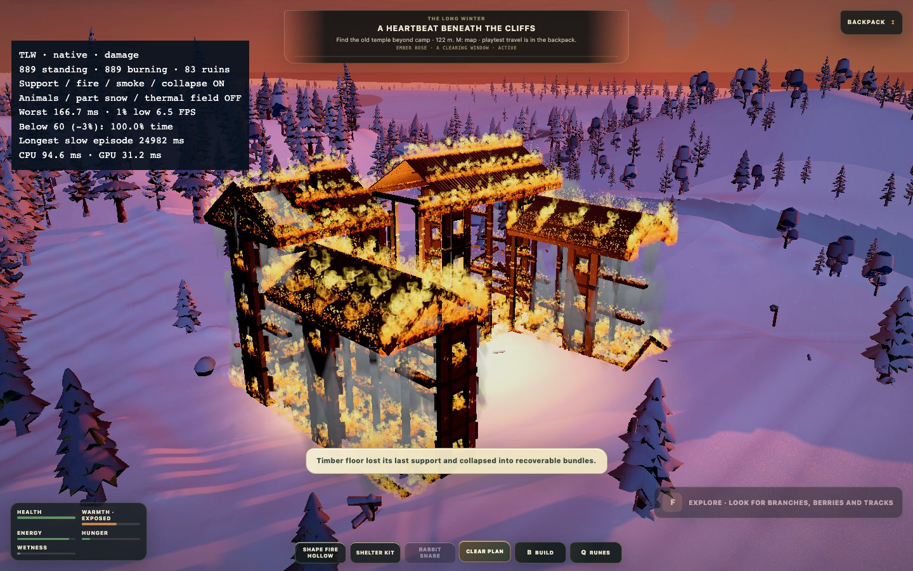
0 osaa pystyssä, 0 palaa, 745 rauniota. Lähdekoodi e0ef16a. Savuworkerin virheitä 0; odottavia kyselyitä vaiheen lopussa 7. Peruutettuja kyselyitä yhteensä 1078957.
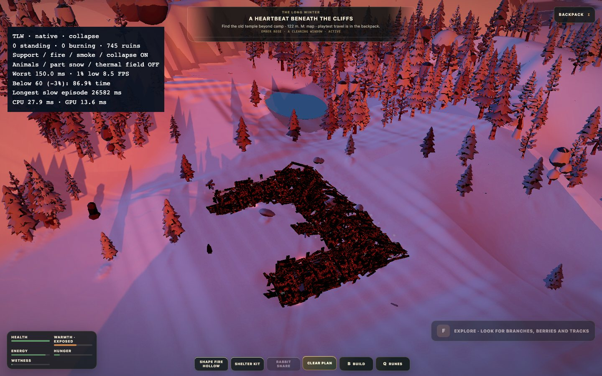
0 osaa pystyssä, 0 palaa, 745 rauniota. Lähdekoodi e0ef16a. Savuworkerin virheitä 0; odottavia kyselyitä vaiheen lopussa 6. Peruutettuja kyselyitä yhteensä 1078957.
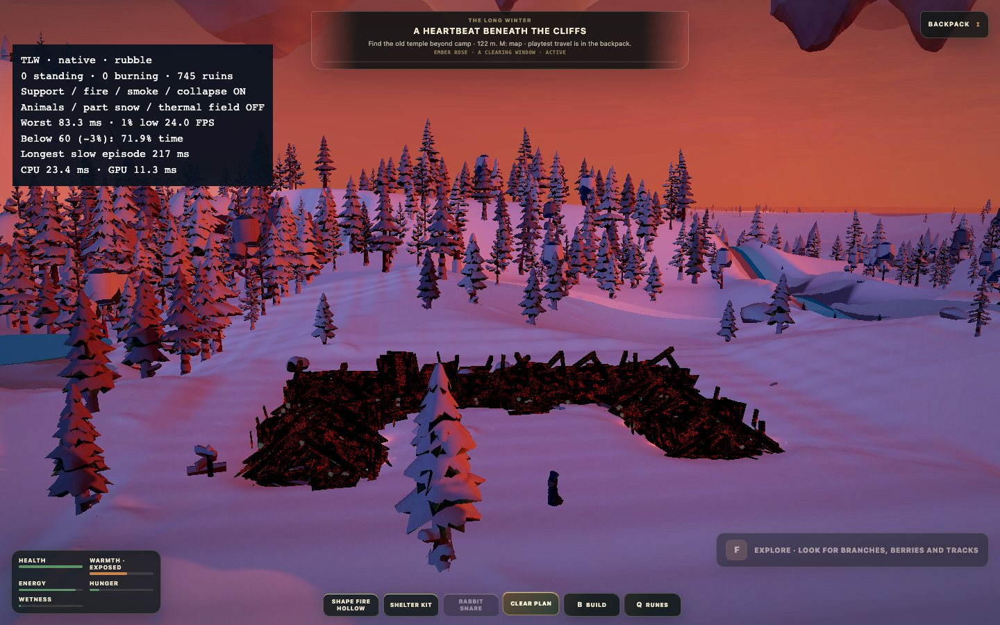